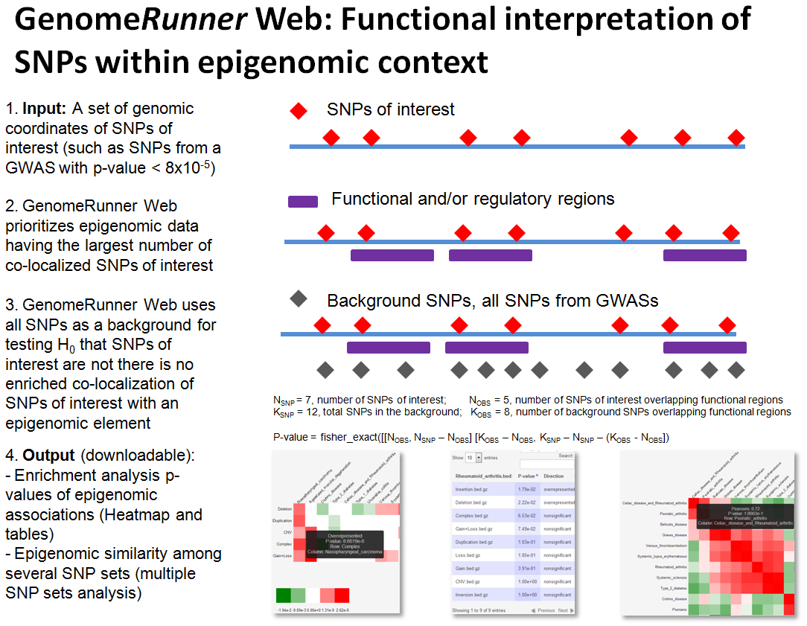

FAQ
* How GenomeRunner can help me?
GenomeRunner helps to interpret potential regulatory effect of SNPs (features of interest, FOIs) by identifying functional elements (aka (epi)genomic features, GFs) most statistically significantly co-localized with them (see Enrichment analysis).
If one analyzes three or more sets of SNPs, such as SNPs from different individuals, populations, diseases, GenomeRunner visualizes their epigenomic similarity (see Epigenomic Similarity analysis). This information may be used, e.g., to group patients by similarity of their individual sets of genomic variants within sell type-specific regulatory landscapes.

* How should my input data look like (Step 1)?
Use tab-separated text files with genomic coordinates of the SNPs of interest in BED format, see examples. As a bare minimun, chromosome, start, and end coordinates should be provided. One can upload BED file(s), or copy-paste tab-separated coordinates.
Note: a set of SNPs should contain at least 5 SNPs to be eligible for the analysis. Genomic coordinates should be 0-bases. The end coordinate should equal start coordinate + 1.
Note: lists of new line-separated rsIDs (e.g., rs2789489\nrs4360154\nrs630642) can be submitted, provided a cross-mapping file has been created (see Custom data). This feature, however, should be considered experimental, use genomic coordinates where possible. Caveat emptor.
* Do you have some sets of SNPs for demo runs?
Sure. Several buttons on the front page will select pre-defined sets of SNPs for the analysis. For Homo Sapiens these include (To be updated):
| Pre-defined sets of SNPs | When to use |
|---|---|
GWAS_vs_DGV - selected disease-associated SNP sets from GWAScatalog. |
Used with gwasCatalog background, to be run for enrichment vs. structural variants (dgvVariants) |
GWAS_vs_tfbsEncode - selected disease-associated SNP sets from GWAScatalog. |
Used with gwasCatalog background, to be run for enrichment vs. 161 experimentally obtained transcription factor binding sites (tfbsEncode) |
snp138Rand - randomly selected sets of SNPs from the snp138 database. |
Used with snp138 background and any (category of) genome annotation elements, to ensure random SNPs do not show significant associations |
gwasRand - randomly selected sets of SNPs from GWAScatalog. |
Used with gwascatalog background and any (category of) genome annotation elements, to ensure random SNPs do not show significant associations |
GWASmore15 - all disease- or trait-associated SNP sets from GWAScatalog having more than 15 SNPs in a set |
Used with gwascatalog background for explorartory analyses vs. any (category of) genome annotation elements |
* What is the "background" (Step 2)?
See the Background section. In short, the background is a “universe” of all SNPs assessed in a study, from which the SNPs of interest came from. Several pre-defined background sets are provided, for Homo Sapiens these include:
| Pre-defined background | When to use |
|---|---|
| snp138 (All Simple Nucleotide Polymorphisms (dbSNP 138)) | For sets of SNPs from whole-genome GWA studies |
| snp138Common (Simple Nucleotide Polymorphisms (dbSNP 138) Found in >= 1% of Samples) | For sets of SNPs from studies where rare variants were ignored |
| gwascatalog (NHGRI Catalog of Published Genome-Wide Association Studies) | For demo testing, to observe regulatory associations of disease-specific sets of SNPs, as compared with randomly selected SNPs from all GWAScatalog |
For a GWAS, the background is likely to be all SNPs (snp138 for Homo Sapiens). For a study using microarrays, the background should contain coordinates of all SNPs on the microarray - upload or copy/paste them.
Note: The SNPs of interest should be a subset of the background SNPs. If some SNPs of interest do not overlap the background, a non-critical error is issued. Use BEDtools for creating custom backgrounds and for any other manipulations with the BED files.
* What are "genome annotation features" (Step 3)?
Genome annotations are discrete regions potentially having functional/regulatory properties. Vast majority of them were experimentally obtained by the ENCODE project.
* There are just too many genome annotation features!!! What to choose?
Don't panic. The genome annotation features are organized by categories mirrored from the UCSC genome browser (see Database structure). Use search box and/or checkboxes in the TreeView control to select one or more genome annotation categories. Clicking on a genome annotation’ name will bring up description, if available.
The ENCODE data are organized by source/data type, tiers (quality), and by cell types. Hint: Several well-known/specially processes genome annotation features sets are brought forward as “default genome annotation features”. For Homo Sapiens these include:
| Genome annotation category | Experimental question: Are the SNPs of interest... |
|---|---|
| altSplicing (Alternative Splicing, Alternative Promoter and Similar Events in UCSC Genes, split by splicing type) | ... potentially disrupt a specific type of alternative spliced regions? |
| chromStates (Chromatin State Segmentation by HMM from ENCODE/Broad, Gm12878 cell line, split by chromatin state type) | ... preferentially located in certain chromatin states? |
| coriellVariants (Coriell Cell Line Copy Number Variants, split by cell types) | ... enriched in CNVs, and in which cell type? |
| gapLocations (Gap locations) | ... happen to be in gaps, telomeres, heterochromatin regions? |
| genomicVariants (Database of Genomic Variants: Structural Variation (CNV, Inversion, In/del), split by variant type) | ... enriched in CNVs, or other types of structural variations? |
| H3K4me3 (Tissue-specific histone 3 lysine 4 trimethylation marks) | ... enriched in tissue-specific active transcription-associated histone mark? |
| histoneMarks (Histone modifications by ChIP-seq from ENCODE/Broad institute, Gm12878 cell line | ... enriched in B-lymphoblastoma-associated histone modification marks? |
| ncRNAs (C/D and H/ACA Box snoRNAs, scaRNAs, and microRNAs from snoRNABase and miRBase, split by ncRNA type) | ... associated with a class of non-coding elements? |
| repeats (Repeating Elements by RepeatMasker, split by repeat class) | ... enriched in regions of low complexity, and in which type? |
| tfbsConserved (HMR Conserved Transcription Factor Binding Sites, split by TFBS name) | ... potentially disrupt a specific computationally predicted transcription factor binding site? |
| tfbsEncode (Transcription Factor ChIP-seq Clusters V3 (161 targets, 189 antibodies) from ENCODE, split by TFBS name) | ... potentially disrupt a specific experimentally defined transcription factor binding site? |
Examples of what to choose:
- Select the
tfbsEncodecategory to get an answer whether the SNPs of interest are enriched in any of the 161 transcription factor binding sites identified by ChIP-seq. - Select the
histoneMarkscategory to get an insight whether the SNPs of interest are enriched in histone marks in B lymphocytes. - Select the
genescategory to answer a question whether the SNPs of interest are enriched in genes/exons.
* How GenomeRunner web server is different from previously published version?
The original version of GenomeRunner, hosted on SourceForge, was designed as an "all purpose" tool. It has several advantages over the web interface, as well as disadvantages, such as learning curve, various non-obvious settings, need to download large databases, restriction to Windows platform, lacking visualization capabilities. GenomeRunner web server addresses these issues - it is:
- Platform-independent, runs in a browser (Google Chrome recommended)
- Simple and intuitive interface
- Visual, the results are presented as interactive heatmaps
- Implements a novel idea of epigenomic similarity analysis, to understand relationships among sets of SNPs on regulatory level
- Downloads-free, we host and maintain genome annotation databases
- Supports local installation and command line usage
* How to cite GenomeRunner?
If you find GenomeRunner useful, please, cite the 2012 paper. The manuscript describing the web version is in preparation
* I still have questions/suggestions/bug report. What to do?
Please, contact